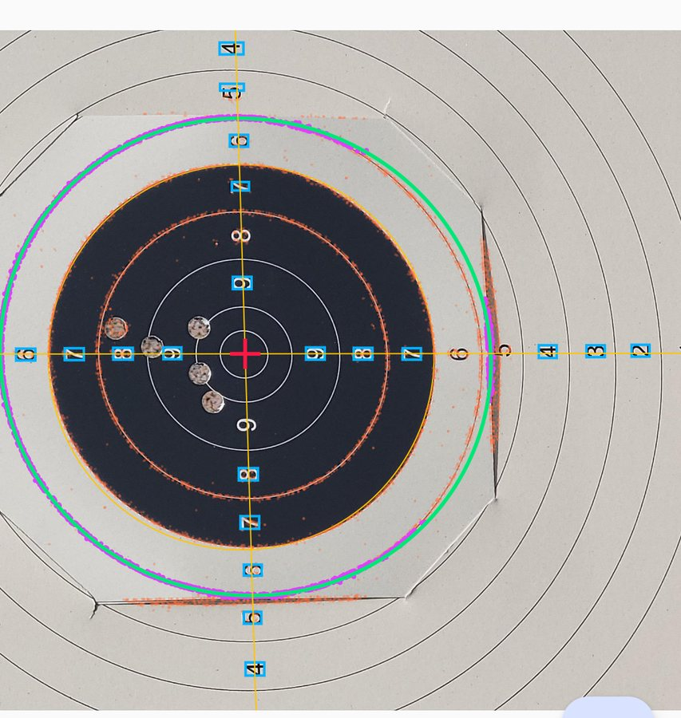

All projects
Kotlin Multiplatform · Computer vision · 2026
Markera
A paper target is covered in circles. Teaching a phone which one it is looking at took seven attempts.
Markera turns a phone photo of a paper target into a scored series. A YOLOv8 model finds the bullet holes, and that part worked early and never really stopped working. The hard problem was geometry.
The first pipeline took the largest dark blob and called it the black ring. On one photo it worked beautifully; on the next it vanished. Fitting edges with RANSAC gave tight, smooth fits on entirely the wrong circle.
The fix was to stop asking the image as a whole. The printed digits already say which ring is which, so they pin the centre, and four small probes only ever look at the rim where the digits say it must be.
“The three surviving pieces are the hole detector, the digit-based centre, and the four probe disks. Everything else was deleted.”
